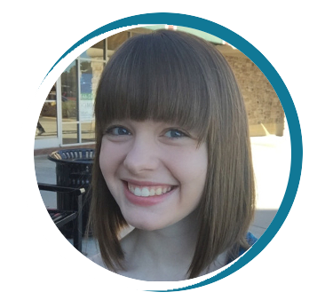

I'm from Lawrenceville, GA, a city that's about 40 minutes outside Atlanta. I came into my first-year at Georgia Tech with plans to major in Biology and minor in Computer Science. While taking my first computer science class during Spring 2016, I fell in love with the subject and switched my major to Computer Science. Currently, my main interests are in artificial intelligence.
This past summer I was a software development intern at Elavon in Atlanta, GA. I worked primarily on an iOS app that allows businesses to handle and process transactions, but I did have some experience with Android as well! I had a great time getting to truly experience what computer science is like in the workplace and can't wait to experience it more in the future!
I'm a hardworking and motivated student, passionate about CS. My hardwork paid off during my first semester as a CS major, where I got a 4.00 for the semester and accepted a teaching assistant position for the class, Discrete Math for CS. I thoroughly enjoyed being a teaching assistant and am going to be one once again in the fall - this time for the class, Computer Organization and Programming, my favorite class so far at Georgia Tech! This class covers a wide range of topics and is a student's first exposure to low-level programming, and looks at a computer from the ground up.
Programming Languages |
Operating Systems |
Other Skills |
|---|---|---|
Python, Java, C, Objective-C, Ruby, Javascript |
PC, MacOS, Linux |
HTML and CSS, LaTeX, GitHub, Microsoft Word, PowerPoint and Excel |